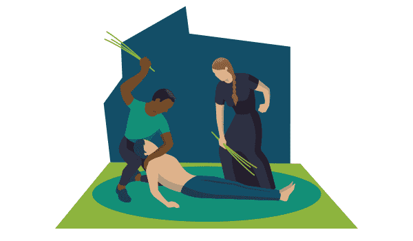
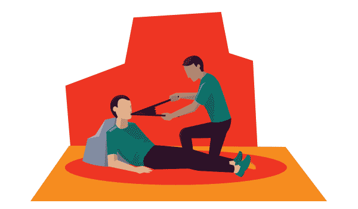
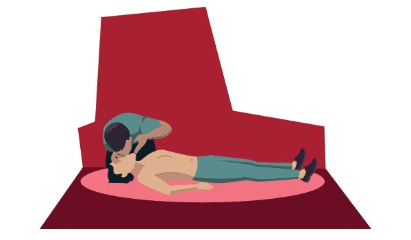

-
Introducción
-
Primer Caso
El primer testimonio escrito que tenemos sobre la reanimación cardiopulmonar se encuentra en el Antiguo Testamento y data del año 600 antes de Cristo, más concretamente en el libro 2 Reyes 4. En sus páginas se habla sobre la resucitación de un niño que había muerto mediante un milagro del profeta Eliseo. Para ello Eliseo oró a Yahveh, después puso su boca sobre la del pequeño y cuando se retiró el niño estornudó siete veces y abrió los ojos.
A principios de la década de los cincuenta, los doctores Kouwenhoven, Knickerbocker y Jude descubrieron las ventajas de la compresión torácicas para provocar la circulación artificial. Más tarde en1960, la reanimación boca a boca y el masaje externo del corazón se combinaron para crear el RCP que se usa hoy en día. -
Historia
 El médico belga Andrés Vesalio fue pionero en describir a mediados del siglo XVI la función de la vía aérea para realizar una traqueotomía. Para ello, introducía pajitas en la tráquea de perros para mantenerlos con vida y estudiar su anatomía.
Dos siglos más tarde, un hombre llamado William Tossach escribió su experiencia sobre un minero que había sido intoxicado por los gases y que recobró la vida tras hacerle el boca a boca. A partir de ese momento, los médicos parisinos aconsejaron realizar esta práctica sobre los ahogados.
Sin embargo, no sería hasta bien entrado el siglo XX, más concretamente en 1958, cuando se pondrían las bases de la reanimación cardiopulmonar. Nos estamos refiriendo al trabajo de Safar, Escarga y Elam que afirmaron la mayor eficacia del boca a boca frente a los métodos de muelles y máscaras mencionados anteriormente. Ese mismo año, la Academia Nacional de las Ciencias reconoció esta técnica como una opción frente a emergencias.
La desfibrilación eléctrica comenzó sus escarceos en el siglo XVIII y buena muestra de ello la tenemos en un trabajo publicado en 1775 donde se detallan estudios empíricos realizados con baterías caseras. Durante los años siguientes se llevaron a cabo experimentos en animales y no fue hasta 1947 que Claude Beck efectuó la primera desfibrilación interna en un corazón humano.
A partir de este momento, los investigadores comienzan a preguntarse si la combinación de las técnicas de ventilación y desfibrilación serían más eficaces que por separado. George Washington Crile escribió un artículo revolucionario en el que mediante compresiones torácicas, ventilaciones e inyecciones de adrenalina obtuvo grandes éxitos en la reanimación de animales. Además, fue el primero en empezar a entender el corazón como una bomba impulsora.
En 1960 los anteriormente citados William Kouwenhoven, James Jude y Guy Knickerbocker defendieron el masaje cardiaco externo combinado con la ventilación boca a boca. Obtuvieron excelentes resultados y además recomendaron la utilización de la desfibrilación externa cuando el paciente está en fibrilación ventricular.
 -
RCP significa reanimación cardiopulmonar. Es un procedimiento de emergencia para salvar vidas que se realiza cuando alguien ha dejado de respirar o el corazón ha cesado de palpitar.
La RCP combina respiración boca a boca y compresiones torácicas.
• La respiración boca a boca suministra oxígeno a los pulmones de la persona.
• Las compresiones torácicas mantienen la sangre oxigenada circulando hasta que se puedan restablecer la respiración y las palpitaciones cardíacas.